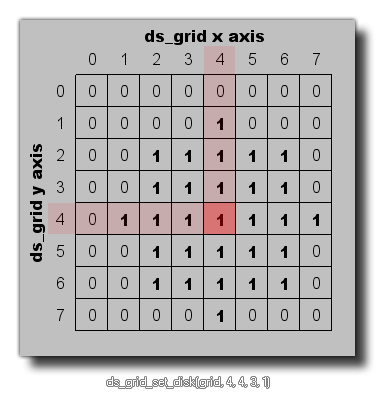

ds_grid_set_disk(index, xm, ym, r, val);
| Streit | Beschreibung |
|---|---|
| index | Der Index des Gitters. |
| xm | Die x-Position der Festplatte im Raster. |
| ym | Die y-Position der Festplatte im Raster. |
| r | Der Radius der Festplatte im Raster. |
| val | Der Wert, der mit den Zellen auf dem Datenträger festgelegt wird. |
Rückkehr: N / A
Mit dieser Funktion können Sie einen kreisförmigen Bereich eines Rasters auf einen bestimmten Wert setzen. Sie müssen eine Anfangsrasterzelle (als x- und y-Achsenkoordinate) sowie den Radius der zu setzenden Platte und den Wert, den Sie ebenfalls für die Platte festlegen möchten, angeben (siehe folgende Abbildung): 
ds_grid_set_disk(grid, ds_grid_width(grid) div 2, ds_grid_height(grid) div 2, 5, -4);
Der obige Code setzt einen kreisförmigen Bereich mit einem Radius von 5 Zellen in dem in der Variable "Gitter" indizierten ds_grid auf einen Wert von -4.